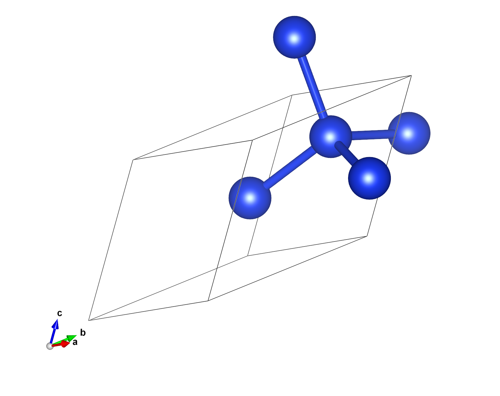

Download this notebook (.ipynb + data files)
4. Computing general observables#
Goal: Become acquainted with how to compute general observables with SAFIRE.
4.1. What you will learn#
What an “estimator” is and how to set one up in the json input file
What a mixed estimator is and when to use one to compute an observable
What a back-propagated estimator is and when to use one to compute an observable
How to compute observables in post-processing with afqmctools
4.2. Introduction#
SAFIRE uses “estimators” to compute observables. Each estimator corresponds to a formal method for computing an observable - i.e. mixed estimators, back-propagated estimators, etc. - We will explain each of the these in the next section. As we mentioned in Understanding the input file,
you can add estimators to an AFQMC calculation using an “estimator” input block. By default, an “energy” estimator is included which is a specialized mixed estimator. Other estimators allow you to specify one or more additional observables to compute.
4.3. Formal Background#
Although we have not seen this explicitly, we have, so far, computed the ground state energy with AFQMC using a so-called mixed estimator of the form
where \(n\) is the projection step index, \(| \Phi_{n,k} \rangle\) are Slater determinant random walkers with weight \(W_{n,k}\) (from importance sampling), and \(| \Psi_\mathrm{T} \rangle\) is the trial wavefunction. The mixed estimator provides an unbiased estimate for any observable which commutes with the Hamiltonian. For the AFQMC energy, \(\hat{O} = \hat{H}\), and trivially \([ \hat{O}, \hat{H} ] = 0\); therefore, the mixed estimator is an unbiased choice for the total ground state energy.
On the other hand, it is often interesting to compute observables which do not commute with the Hamiltonian. For example, the one-body reduced density matrix, from which many properties can be computed, does not commute with the Hamiltonian. In these cases, a back-propagated estimator is necessary to mitigate the bias that would be incurred by using a mixed-estimator. The back-propagated estimator has the form,
where \(| \Phi_{n,k} \rangle\) are the usual forward-projected Slater determinant random walkers, and \(| \tilde{\Phi}_{m,k} \rangle\) are the back-propagated walkers given by,
4.4. ▶️ Run the cell below to setup the tutorial#
# Run me (shift+enter or click the play button) to setup the tutorial!
from pathlib import Path
# simple setup
from tutorial_utils import run_afqmc
scratch_dir = Path("data")
scratch_dir.mkdir(parents=True, exist_ok=True)
# copy files to scratch
import shutil
_ = shutil.copy("files/hamil.h5", scratch_dir)
_ = shutil.copy("files/wfn.h5", scratch_dir)
!ls -al {scratch_dir}
4.5. Setup the Test System#
We will again use Si in its primitive cell at equilibrium represent in a basis of Kohn-Sham bands as a toy case to run concrete calculations on.

The trial wavefunction is also derived from the DFT solution. We have provided HDF5 files containing the Hamiltonian and trial wavefunctions, respectively. The code block above should have copied them to your scratch directory.
4.6. The “Energy” Estimator#
By default, SAFIRE will include an “energy estimator” in the calculation. This is formally a mixed estimator where \(\hat{O} = \hat{H}\). The Hamiltonian trivially commutes with itself, so a mixed estimator of the energy is unbiased.
You can add an energy estimator input block to your json input file in order to customize its settings. For example, in the input block,
"estimator" : {
"name": "energy",
"print_components": true,
"overwrite": true
}
the “name” keyword tells us what kind of estimator we want. In this case, we want an “energy” estimator. We are setting the “print_components” and “overwrite” flags to true. “print_components” tells SAFIRE to print the one-body, two-body direct, and two-body exchange contributions to the energy separately. “overwrite” tells SAFIRE to overwrite the default energy estimator with the one that we have defined.
4.6.1. Most Common Settings#
setting |
default |
description |
|---|---|---|
print_components |
False |
If True, print the one-body, two-body coulomb, and two-body exchange contributions to the energy in the |
equil_multiplier |
0 |
The multiplier that determines the length of the equilibration phase. The equilibration phase length is computed as \((equilibration\_length) = (equil\_multiplier) * (population\_control\_inveral)\) where the population control interval is defined in the execute block. During the equilibration phase, observables are not computed. |
overwrite |
False |
If True, overwrite the default energy estimator with the explicitly defined energy estimator |
4.6.2. Less Common Settings#
setting |
default |
description |
|---|---|---|
print_sign |
False |
If True, print various quantities related to the sign/phase of random walkers in the |
remove |
False |
If True, remove the default energy estimator. Note that the explicitly defined energy estimator will not be used in the calculation! |
truncate |
False |
If True, truncate the energy such that data that fall outside of the range \([-3 var, 3 var]\), with \(var\) being the variance, are set to either \(-3 var\) or \(3 var\), whichever is closer |
from afqmctools.inputs.from_hdf import write_json
# some shared parameters for the AFQMC run
execute_options = {
"walker_set" : {
"walker_type" : "COLLINEAR"
},
"timestep": 0.01,
"steps": 7000,
"population_control_interval" : 10,
"measure_interval_multiplier": 1,
"walker_ortho_interval" : 10 ,
"n_walkers_per_mpi_task": 200,
"seed" : 42,
"estimator" : {
"name" : "energy",
"print_components" : True,
"overwrite" : True
}
}
write_json(
scratch_dir / "afqmc.json",
fwfn0=scratch_dir / "wfn.h5",
fham0=scratch_dir / "hamil.h5",
walker_type="COLLINEAR",
exec_opts=execute_options
)
4.6.3. ▶️ Your Turn: Run SAFIRE with an explicit energy estimator block#
Now you can run AFQMC, and you should see the following column headers in the *scalar.dat file.
block time nWalkers weight PseudoEloc LogOvlpFactor EnergyEstim__nume_real EnergyEstim__nume_imag EnergyEstim__deno_real EnergyEstim__deno_imag EnergyEstim__timer OneBodyEnergyEstim__nume_real EXXEnergyEstim__nume_real ECoulEnergyEstim__nume_real MixedEstim_timer Eshift freeMemory
run_afqmc(
run_dir=scratch_dir, # directory to run SAFIRE in - output files will be there as well
input_file="afqmc.json",
np=16, # number of MPI tasks
output_file=None
)
You can check the *.scalar.dat file to verify that the extra columns that we requested were printed.
!head -n 10 $scratch_dir/qmc.s000.scalar.dat
4.7. Extracting and Analyzing the AFQMC energy.#
We learned about basic energy analysis using the CLI and the analyze_scalar_data() Python function in Hello SAFIRE.
We can use the same tools here to get the average AFQMC energy and the stochastic uncertainty.
For pedagogical reasons, we will instead read the entire scalar data file so that we can plot several of the data columns as a function of total projection time. In the code block below, the total energy (solid blue line) is plotted along with the sum of the three individual columns (dotted orange line) corresponding to the one-body energy, the direct / Coulomb interaction energy, and the exchange energy. The two curves agree with each other to machine precision.
Run the code block below.
from types import SimpleNamespace
import matplotlib.pyplot as plt
from stats.scalar_dat import analyze_scalar_data,read_scalar_table
# read scalar table and return as a pandas DataFrame
args = SimpleNamespace(
fname=scratch_dir / "qmc.s000.scalar.dat",
append=None,
mark_header="#"
)
df = read_scalar_table(args)
# read the energy components
one_body_energy = df["OneBodyEnergyEstim__nume_real"].values
direct_coulomb_energy = df["ECoulEnergyEstim__nume_real"].values
exchange_energy = df["EXXEnergyEstim__nume_real"].values
two_body_energy = direct_coulomb_energy + exchange_energy
# read the total energy
total_energy = df["EnergyEstim__nume_real"].values
# plot the energy both ways
plt.plot(total_energy,label="Total Energy from energy Estimator")
plt.plot(one_body_energy + direct_coulomb_energy + exchange_energy, ":", label=r"$E_1 + E_{Coul} + E_{x}$")
plt.legend()
plt.xlabel("Sample")
plt.ylabel(r"$\Delta E \equiv E_\mathrm{MixedEstimator} - E_{EnergyEstimator}$")
plt.title(r"Total energy vs. sample")
plt.show()
4.8. Computing Observables using a “Mixed” Estimator#
SAFIRE also includes a mixed estimator that periodically evaluates,
where \(\hat{O}\) is an operator. The one-body reduced density matrix (1rdm), given by
and the two-body reduced density matrix (2rdm), given by,
are common observables.
4.8.1. Specifying Observables to Measure#
You can specify which observables you want to compute by adding a corresponding observable block to an estimator block. For example, the estimator block below includes both the 1rdm, and the diagonal 2rdm.
"estimator" : {
"name" : "mixed",
"onerdm" : {
"name" : "my_onerdm"
},
"diag2rdm" : {
"name" : "my_diag2rdm"
}
}
As we will see later, this is exactly how observables are specified for the BP estimator as well. See the User Manual for a complete list of currently implemented observables.
4.8.2. Pedagogical Demonstration#
Below, we will use a mixed estimator to compute the 1-rdm, and the diagonal 2-rdm. We can then directly compute each contribution to the AFQMC energy,
and compare with the results from the energy estimator. We should find exact agreement between the two if we use the same AFQMC run parameters.
Run the code below to write the input file!
from afqmctools.inputs.from_hdf import write_json
# some shared parameters for the AFQMC run
execute_options = {
"walker_set" : {
"walker_type" : "COLLINEAR"
},
"timestep": 0.01,
"steps": 7000,
"population_control_interval" : 10,
"measure_interval_multiplier": 1,
"walker_ortho_interval" : 10 ,
"n_walkers_per_mpi_task": 50,
"seed" : 42,
"estimator" : {
"name" : "mixed",
"onerdm" : {
"name" : "my_onerdm"
},
"twordm" : {
"name" : "my_twordm"
}
}
}
print(execute_options)
write_json(
scratch_dir / "afqmc_1.json",
fwfn0=scratch_dir / "wfn.h5",
fham0=scratch_dir / "hamil.h5",
walker_type="COLLINEAR",
exec_opts=execute_options,
series=1
)
Now, we can run AFQMC with a Mixed Estimator in order to compute the 1-rdm. This will probably take a while! To finish the tutorial more quickly, remove the “twordm” block from the input and just compute the one-body energy.
run_afqmc(
run_dir=scratch_dir, # directory to run SAFIRE in - output files will be there as well
input_file="afqmc_1.json",
np=16, # number of MPI tasks
output_file=None
)
4.8.3. Data Extraction and Analysis#
afqmctools provides several tools for extracting data - i.e. retrieving data from the SAFIRE output files - and analyzing data - arriving at a final average with stochastic uncertainty.
Since some observables require a large amount of memory to store, afqmctools also provides “transforms” which are applied to the raw observables as they are read from disk.
For example, in the cell below, a energy evaluation transform is used to compute the one-body energy, a scalar, on the fly as one-rdm samples are read from the *.h5 data file.
This dramatically reduces the memory needed to analyze the AFQMC results from SAFIRE.
from pathlib import Path
from types import SimpleNamespace
import matplotlib.pyplot as plt
import numpy as np
from afqmctools.hamiltonian.converter import read_hamiltonian
from afqmctools.analysis.extraction import extract_observable,get_metadata
from afqmctools.analysis.transform import hermitize_factory,eval_one_body_obs_factory,eval_two_body_obs_factory
from afqmctools.analysis.average import WALKER_TYPE
# read the Hamiltonian
H = read_hamiltonian(scratch_dir / "hamil.h5")
M = H["nmo"]
Econst = H["enuc"]
hcore_k = H["hcore"]
hcore = hcore_k[0]
walker_type = WALKER_TYPE[get_metadata(scratch_dir/"qmc.s001.stat.h5")["WalkerType"]]
print(walker_type)
# set up a transform to compute the one-body energy from the one-rdm
eval_one_body_energy = eval_one_body_obs_factory(
one_body_operator=hcore,
walker_type=walker_type
)
# set up a transform the hermitize the one-rdm
hermitize = hermitize_factory(
walker_type=walker_type
)
# Extract and Transform data
Energy_1body = extract_observable(
scratch_dir/"qmc.s001.stat.h5", # filename
estimator='mixed',
name="one_rdm", # observable type
ix=0, # index of the "average" - we'll return to this below!
transform=[hermitize,eval_one_body_energy], # list of transforms to apply *FROM LEFT TO RIGHT*
)
# add in constant energy for consistency with SAFIRE convention
Energy_1body += Econst
plt.plot(one_body_energy,label="1-body energy from EnergyEstimator")
plt.plot(Energy_1body,'--',label="1-body energy (Mixed estimator)")
plt.legend()
plt.xlabel("Sample")
plt.ylabel("Total energy")
plt.title("Total energy vs. sample")
plt.show()
# now, look at the difference!
delta_E = Energy_1body[:,0] - one_body_energy
print(Energy_1body.shape)
print(one_body_energy.shape)
# plot the difference between the two energies
plt.plot(delta_E,label="1-body energy difference")
plt.legend()
plt.xlabel("Sample")
plt.ylabel(r"$\Delta E \equiv E_\mathrm{MixedEstimator} - E_{EnergyEstimator}$")
plt.title(r"$\Delta E_{1-body}$ vs. sample")
plt.show()
As we can see, the energy computed using the one-body reduced density matrix with a mixed estimator yields the exact same one-body energies as the energy estimator to very high precision. This is no surprise since the energy estimator is simply a specialized mixed estimator.
4.8.4. Your Turn : Extract the 2rdm and compute the 2-body energy#
Repeat the same exercise for the two-body energy. As we saw in the energy estimator section, the exchange and direct coulomb energies are printed to file separately by the energy estimator.
To compute the two-body energy, you will need to measure the “diag_twordm” observable during AFQMC, and extract and transform it.
We provide code for setting up the appropriate transform functions in the code block below.
Note that the diagonal 2-rdm is stored as the upper-triangular of the full matrix.
import numpy as np
import matplotlib.pyplot as plt
from afqmctools.analysis.transform import hermitize_factory,eval_one_body_obs_factory,eval_two_body_obs_factory
ncv_k = H["nchol_pk"]
k_idx = 0 # gamma only for this tutorial
ncv = ncv_k[k_idx]
print(ncv)
# taking the k=0 Cholesky vectors!
cholesky_vectors = np.transpose(H["chol"][k_idx].reshape((M,M,ncv)),(2,0,1))
cholesky_vectors_dagger = np.transpose(H["chol"][k_idx].reshape((M,M,ncv)),(2,1,0)).conj()
eri = np.einsum("gil,gjk->iljk",cholesky_vectors,cholesky_vectors_dagger).flatten()
eval_two_body_energy = eval_two_body_obs_factory(
two_body_operator=eri,
walker_type=walker_type
)
Energy_2body_mixed = extract_observable(
scratch_dir/"qmc.s001.stat.h5",
estimator='mixed',
name="two_rdm",
ix=0,
transform=eval_two_body_energy, # YOUR TURN: Supply the transform function to compute the two-body energy,
batch_size=1
)
plt.plot(two_body_energy,label="Two-body energy from energy estimator")
plt.plot(Energy_2body_mixed,":",label="Two-body energy from mixed estimator")
plt.legend()
plt.xlabel("Sample")
plt.ylabel(r"Energy $E_{Ha}$")
plt.title("Two-body energy vs. sample")
plt.show()
# plot the difference as well!
delta_E = Energy_2body_mixed[:,0] - two_body_energy
# plot the difference between the two energies
plt.plot(delta_E,label="two-body energy difference")
plt.legend()
plt.xlabel("Sample")
plt.ylabel(r"$\Delta E \equiv E_\mathrm{MixedEstimator} - E_{EnergyEstimator}$")
plt.title(r"$\Delta E_{2-body}$ vs. sample")
plt.show()
Once again, we see that the two body energy computed from the two-body reduced density matrix samples is the same as the two body energy from the energy estimator (after adding the exchange and direct Coulomb contributions together, of course).
4.9. Averaging Observables#
Averaging observables computed using AFQMC requires some care.
First, one must make sure that the data is equilibrated.
Second, in AFQMC, successive samples are not independent since they depend on the recent history of each walker. This is known as “autocorrelation”. Care must be take to remove autocorrelation effects or the stochastic uncertainty will be underestimated.
The former can be achieved by visualizing the observable over imaginary time, and finding the equilibration time by inspection. We saw this in Hello SAFIRE. afqmctools provides tools for automatically computing the auto-correlation time - i.e. the time interval at which measurements are no longer autocorrelated - and adjusting the number of effective samples accordingly.
In the code cell below, we demonstrate how to use the provided tools to automatically compute averages.
# TODO here: demonstrate how to automatically average observables!
from afqmctools.analysis.average import average_observable
E1body, dE1body = average_observable(
filename=scratch_dir/"qmc.s001.stat.h5",
name = "one_rdm",
eqlb=20, # EXERCISE: Set this to an appropriate value based on the energy vs projection time curve above.
estimator='mixed',
ix=0,
blocksize=1,
transform=[hermitize,eval_one_body_energy],
remove_auto_correlation=True # you can turn this off if you prefer to remove autocorrelation yourself.
)
E2body, dE2body = average_observable(
filename=scratch_dir/"qmc.s001.stat.h5",
name = "two_rdm",
eqlb=20, # EXERCISE: Set this to an appropriate value based on the energy vs projection time curve
estimator='mixed',
ix=0,
blocksize=1,
transform=eval_two_body_energy,
remove_auto_correlation=True
)
print(f"Average energy from average_observable() and transforms: {E1body + E2body + Econst} +/- {np.sqrt(dE1body**2 + dE2body**2)}")
## compare with the analyze_scalar_stats result:
from stats.scalar_dat import analyze_scalar_data
_ = analyze_scalar_data(dict(
fname = scratch_dir/"qmc.s000.scalar.dat",
series_column = "time",
nequil = 15,
trace = True
))
4.10. Back-Propagation (BP) in SAFIRE#
Mixed estimators are biased for observables \(\hat{O}\) such that \([\hat{O},\hat{H}] \neq 0\), which requires the use of pure estimators. The Back-Propagation (BP) algorithm is used to compute pure estimators efficiently in SAFIRE.
4.10.1. Basic BP Configuration#
BP is invoked in SAFIRE by including a “back_propagation” estimator in the input file:
{
"estimator": {
"name": "back_propagation",
"path_restoration": true,
"bp_walker_ortho_interval": 5,
"measure_interval_multiplier": 20,
"equil_multiplier": 100,
"onerdm": {
"name": "one_rdm"
}
}
}
Observables are added to the BP block in the same way as for mixed estimators.
4.10.2. Measurement Intervals#
Since BP involves an additional projection, the measurement interval controls the number of back-propagated steps. Just as in the execute block or a mixed estimator block, the input file includes a measurement interval “multiplier”, and the actual measurement interval, \(m\), is determined as:
4.10.3. Multiple BP Lengths#
SAFIRE implements the capability of running BP with multiple BP measurement lengths. We call each measurement with a different BP length an “average”. This allows the forward projection to be reused while checking for convergence in the BP length. To define multiple BP lengths/averages, simply provide a JSON array for measure_interval_multiplier corresponding to all of the BP lengths that you would like to use:
{
"estimator": {
"name": "back_propagation",
"path_restoration": true,
"bp_walker_ortho_interval": 10,
"measure_interval_multiplier": [60, 70, 80],
"equil_multiplier": 80,
"onerdm": {
"name": "one_rdm"
}
}
}
4.10.4. Equilibration Phase#
The BP estimator implements an equilibration phase at the beginning of the AFQMC calculation where no BP is performed.
This is recommended since computing observables is expensive and since AFQMC needs to equilibrate before samples can meaningfully contribute to the average.
Similarly to the measure_interval_multiplier, the equilibration time is specified as an equilibration multiplier ("equil_multiplier") and the actual equilibration time is given by:
4.10.5. All Settings#
setting |
default |
description |
|---|---|---|
measure_interval_multiplier |
1 |
controls the number of back propagation steps which are determined as
\[\text{number\_of\_BP\_steps} = \text{measure\_interval\_multiplier} \times \text{population\_control\_interval}.\]
Can be either a single value or multiple values. If multiple values are provided, BP will be performed with each corresponding number of BP steps and observables are accumulated and saved for each distinct BP length. |
equil_multiplier |
0 |
The multiplier that determines the length of the equilibration phase. The equilibration phase length is computed as \(\text{equilibration\_length} = \text{equil\_multiplier} \times \text{population\_control\_inveral}\) where the population control interval is defined in the execute block. During the equilibration phase, observables are not computed. |
bp_walker_ortho_interval |
1 |
interval for performing walker orthonormalization during back-propagation (i.e. for the left-hand side Walkers) |
path_restoration |
false |
If true, perform path restoration. |
extra_path_restoration |
false |
If true, perform an extra path restoration. |
4.10.6. Demonstration of BP#
For the sake of execution time, we will compute only the one-rdm using the back-propagation estimator. We will find that the one-body energy computed using the BP one-rdm will not agree with the one computed using a mixed estimator. The BP-estimated one-body energy is unbiased, and represents a better estimate of the one-body energy than that provided by the mixed estimator.
# Example: Setting up a BP calculation with multiple BP lengths
from afqmctools.inputs.from_hdf import write_json
# Set up AFQMC parameters with back-propagation
execute_options_bp = {
"walker_set": {
"walker_type": "COLLINEAR"
},
"timestep": 0.01,
"steps": 10000,
"measure_interval_multiplier": 1,
"population_control_interval": 10,
"walker_ortho_interval": 10,
"n_walkers_per_mpi_task": 100,
"seed": 42,
"estimator": {
"name": "back_propagation",
"path_restoration": True,
"bp_walker_ortho_interval": 10,
"measure_interval_multiplier": [4,5,6], # Multiple BP lengths
"equil_multiplier": 0, # Equilibration phase
"onerdm": {
"name": "one_rdm"
}
}
}
write_json(
scratch_dir / "afqmc_bp.json",
fwfn0=scratch_dir / "wfn.h5",
fham0=scratch_dir / "hamil.h5",
walker_type="COLLINEAR",
exec_opts=execute_options_bp,
series=2
)
print("Back-propagation input file created with the following BP parameters:")
print(f"- Multiple BP lengths: {execute_options_bp['estimator']['measure_interval_multiplier']}")
print(f"- Equilibration multiplier: {execute_options_bp['estimator']['equil_multiplier']}")
print(f"- Population control interval: {execute_options_bp['population_control_interval']}")
print(f"- Actual BP lengths: {[m * execute_options_bp['population_control_interval'] for m in execute_options_bp['estimator']['measure_interval_multiplier']]}")
print(f"- Equilibration time: {execute_options_bp['estimator']['equil_multiplier'] * execute_options_bp['population_control_interval']}")
# Run AFQMC with back-propagation
print("Running AFQMC with back-propagation estimator...")
print("This will take longer than mixed estimators due to the additional back-propagation steps.")
run_afqmc(
run_dir=scratch_dir,
input_file="afqmc_bp.json",
np=16,
output_file=None
)
# Extract and analyze BP results
from afqmctools.analysis.extraction import extract_observable, get_metadata
from afqmctools.analysis.average import WALKER_TYPE
from afqmctools.analysis.transform import hermitize_factory
# Check the metadata to understand the walker type
metadata = get_metadata(scratch_dir / "qmc.s002.stat.h5")
bp_metadata = get_metadata(scratch_dir / "qmc.s002.stat.h5", path="/Observables/BackPropagated/")
walker_type = WALKER_TYPE[metadata["WalkerType"]]
print(f"Walker type: {walker_type}")
# set up a transform the hermitize the one-rdm
hermitize = hermitize_factory(
walker_type=walker_type
)
bp_lengths = bp_metadata["BackPropSteps"]
naverages = len(bp_lengths)
bp_energy = np.zeros((naverages),dtype=np.complex128)
bp_energy_err = np.zeros((naverages),dtype=np.complex128)
for iav, bp_length in enumerate(bp_lengths):
print(f"Extracting average {iav} (BP length = {bp_length} steps)")
# Extract the one-RDM for this average
energy_bp, denergy_bp = average_observable(
scratch_dir / "qmc.s002.stat.h5",
estimator='back_propagated',
name="one_rdm",
eqlb=20,
ix=iav, # Index of the BP average
transform=[hermitize,eval_one_body_energy], # Apply hermitization
batch_size=10
)
bp_energy[iav] = energy_bp[0] + Econst
bp_energy_err[iav] = denergy_bp[0]
import matplotlib.pyplot as plt
from stats.scalar_dat import analyze_scalar_data
E_mixed, dE_mixed = analyze_scalar_data(dict(
fname = scratch_dir/"qmc.s000.scalar.dat",
series_column = "time",
column = "OneBodyEnergyEstim__nume_real",
nequil = 10
))
fig, ax = plt.subplots(1, 1, figsize=(8, 5))
# plot reference value from mixed
ax.fill_between([min(bp_lengths), max(bp_lengths)],
E_mixed - dE_mixed, E_mixed + dE_mixed,
alpha=0.2, color='red')
ax.axhline(y=E_mixed, color='red', linestyle='--', alpha=0.7, label=f'Mixed Estimator')
# Plot convergence
ax.errorbar(bp_lengths, bp_energy, yerr=bp_energy_err, marker='o', capsize=5, capthick=2, label='BP Estimator')
ax.set_xlabel('BP Length (steps)')
ax.set_ylabel('Mean One-body Energy (Ha)')
ax.set_title('BP Convergence with BP Length')
ax.legend()
ax.grid(True, alpha=0.3)
plt.tight_layout()
plt.show()
4.10.7. Key Takeaways from Back-Propagation Analysis#
When to Use BP vs Mixed Estimators:
Mixed Estimators: Use for observables that commute with the Hamiltonian (like energy). They are computationally cheaper and provide unbiased estimates.
Back-Propagation: Required for observables that do not commute with the Hamiltonian (like the one-body reduced density matrix). BP provides pure estimators that are unbiased.
Important BP Configuration Points:
Equilibration: Always include an equilibration phase (
equil_multiplier) to allow AFQMC to reach equilibrium before BP measurements begin.Multiple BP Lengths: Use multiple BP lengths to check convergence. Longer BP lengths generally provide more accurate results but are more expensive.
Computational Cost: BP calculations are significantly more expensive than mixed estimators due to the additional back-propagation steps.
Convergence Analysis:
The plots above show how the BP estimator converges with increasing BP length. For observables that don’t commute with the Hamiltonian, you should see:
Different results between mixed and BP estimators (showing the bias in mixed estimators)
Convergence of BP results as the BP length increases
Eventually, BP results should converge to the true value
This demonstrates why BP is essential for computing unbiased estimates of observables like charge densities, spin densities, and other quantities derived from the one-body reduced density matrix.
4.11. Summary#
In this tutorial, you were acquainted with how to compute general observables with SAFIRE.
4.12. What you learned#
What a mixed estimator is and when to use one to compute an observable
What a back-propagated estimator is and when to use one to compute an observable
How to compute observables in post-processing with afqmctools